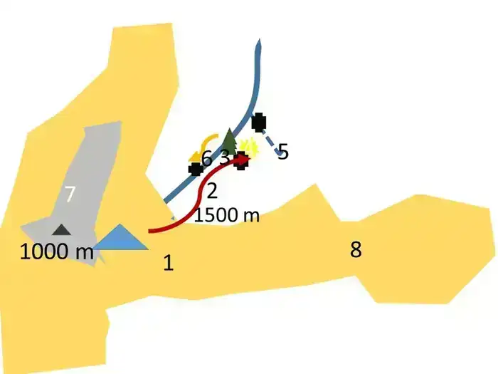
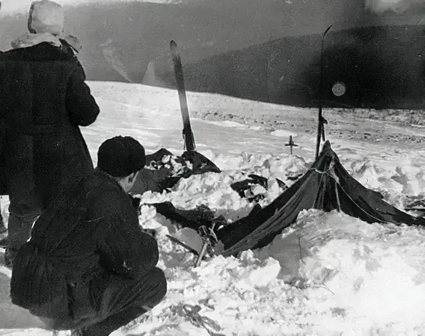

The facts, without the fog
In late January 1959 a group of nine from the Ural Polytechnic Institute set off to ski across the northern Urals. Their leader was Igor Dyatlov, 23. They were experienced — this was a Grade III route, the hardest Soviet classification.
Maps, diagrams and images




They camped on the slope of Kholat Syakhl, "Dead Mountain". Searchers later found the tent still standing, cut open from the inside, with most of the group's clothing and boots left behind. Nine sets of footprints led downhill toward the tree line, some in socks, some barefoot.
Two were found under a cedar tree beside a small fire; three more between the tree and the tent, apparently trying to return; four in a ravine, in a makeshift snow shelter. Causes of death: hypothermia for most, and severe chest and skull trauma for the ravine group — injuries, the autopsy said, comparable to a car crash, with no corresponding external wounds.
Small oddities fed the legend: a camera with unexplained frames, slightly elevated radiation on one sweater, and a missing tongue and eyes in one body (consistent with scavenging and decomposition in water). The Soviet investigation closed with "a compelling natural force" and a classified file.
The theories, ranked honestly
- Infrasound / paradoxical disrobing. Katabatic winds around the mountain could produce infrasound, inducing panic; severe hypothermia famously causes paradoxical undressing. Plausible for the flight and the discarded clothes, but weak on the fractures.
- Secret weapons test. No test site nearby, no document, no radiation pattern consistent with a blast or fallout.
- Yeti / UFO / "the unknown". No physical evidence of any kind, and the story only needs them if the avalanche fails — which it no longer does.
- Slab avalanche. The strongest explanation, and the one that has been modelled.
Johan Gaume and Alexander Puzrin published a study in Communications Earth & Environment modelling the specific snow and slope conditions. Their conclusion: a small slab avalanche, delayed by two and a half to nine and a half hours after the slope was cut, was consistent with the injuries — including the chest and skull fractures caused by a low-density snow slab hitting people lying in a ravine — and with the hikers' decision to cut into the tent and flee downhill.
The delayed release is the key insight: it explains why experienced mountaineers camped on a slope that looked safe, and why they left in panic rather than digging out gear.
What remains open
Not everything is nailed down: the exact timing, why the group split, and the minor anomalies in the file. A scientific explanation does not need to account for every detail to be the best available one, and the honest position is "avalanche, with residual uncertainty" rather than "solved beyond question" or "unexplainable".
That is the useful lesson here, and it is the same one as the wider anomalies page: "unexplained" is a statement about the state of the evidence, not a permanent property of an event. Cases get solved, and the legend outlives the solution.
Sources for this page
- Gaume & Puzrin (2021), “Mechanisms of slab avalanche release and impact in the Dyatlov Pass incident”, Communications Earth & Environmentnature.com
- Wikipedia, “Dyatlov Pass incident” — timeline, autopsies, fileen.wikipedia.org
- EPFL, “Using science to solve the Dyatlov Pass mystery”epfl.ch
Open resources on this topic
- Bookmichael-lanz-dyatlov-pass — Michael Lanz · 2020 (Internet Archive, free to read)
- BookDead Mountain : the untold true story of the Dyatlov Pass incident — Eichar, Donnie, author · 2013 (Internet Archive, free to read)
- BookThe Dyatlov Pass Incident: The Kolevatov Model. A Constraint‑Based Resolution and the Most Resilient Explanati — Kenny Scapula · 2026 (Internet Archive, free to read)
- PapersOpen-access articles: DOAJ · PubMed Central · Internet Archive Scholar
- BooksPublic-domain and borrowable copies: Open Library · Project Gutenberg · Google Books
Cite this page
Momin, S. (2026). Dyatlov Pass. The Larger World Archive. https://drsamonline.github.io/LARGE_GLOBE/dyatlov-pass.htmlMomin, Sohil. “Dyatlov Pass.” The Larger World Archive, 2026, https://drsamonline.github.io/LARGE_GLOBE/dyatlov-pass.html.Momin, Sohil. “Dyatlov Pass.” The Larger World Archive, 2026. https://drsamonline.github.io/LARGE_GLOBE/dyatlov-pass.html.@misc{dyatlov2026dyatlov,
author = {Momin, Sohil},
title = {Dyatlov Pass},
year = {2026},
howpublished = {The Larger World Archive},
url = {https://drsamonline.github.io/LARGE_GLOBE/dyatlov-pass.html},
note = {Last reviewed 20 November 2026}
}Last reviewed 20 November 2026 · Corrections policy · this page is not peer reviewed